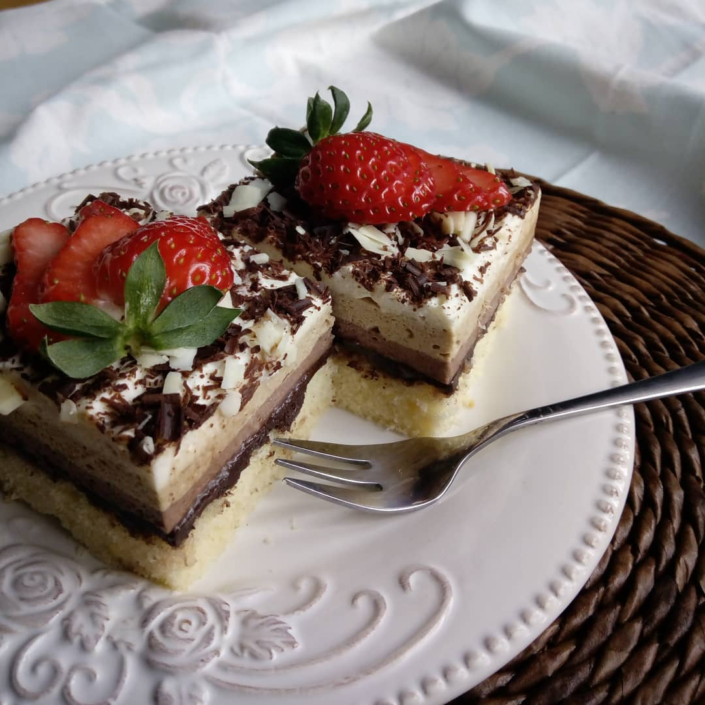

Piškotové rezy podľa @janastochlova — Normy Jedál
Když je takový pěkný den, tak nesmí chybět nějaké to sladké pokušení.Piškot natřený oříškovou pomazánkou a trojí šlehačkou, pařížskou, kávovou a klasickou a jako třešínka strouhaná čokoláda s jahodou. Je to taková ta rychlovka co nikdy nezklame.🍮🍰☕️
#dnespecu #piskotoverezy #slehackaajahody #pecenijeradost #pecenislaskou #baking #mybaking #mojepeceni #bavimeto #sweetbaking #radimlsame #necokekave #🍮🍰☕️